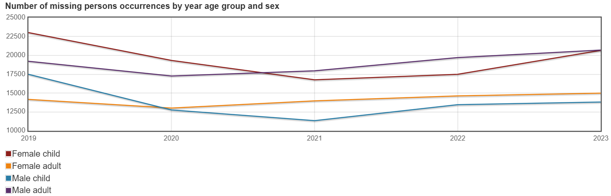

As of 2023 there is 269 reports of missing people per 100,000 people in BC.
British Columbia sadly has the highest missing persons in all of Canada. Missing Indigenous people make up 12% of all missing adults in Canada. Many of their cases are not solved unlike other races.
All information provided on this site was gathered by one person who updates it on a monthly basis. Some of these people may have been found and the website is waiting to be updated. If you think you know someone missing please contact your local police. Some locations stated are approximations I have made through searching. These locations are not 100% accurate but the best I could figure out.
Note the image above is for all of Canada. BC makes up over 40% of all missing people.